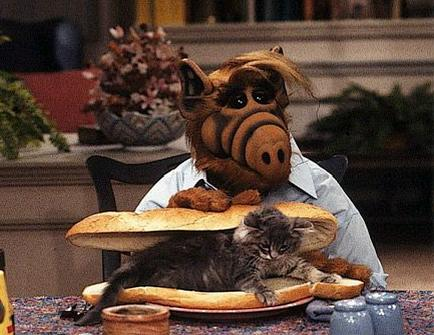
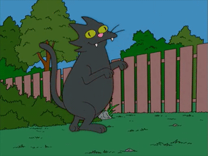
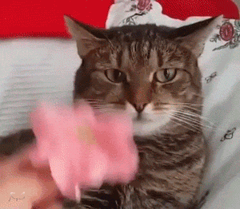

Algunas razas de gatos
Gato siamés


El gato thai, o gato siamés tradicional, de cabeza redonda tiene su origen en Tailandia. En 1871 fue exhibido por primera vez en el Crystal Palace en Londres. Durante el siglo XX, criadores norteamericanos crearon una nueva raza, de cabeza con forma alargada y triangular, llamada siamés moderna.

Gato azul ruso
Se dice que el gato Azul Ruso es una raza natural que apareció en los alrededores del puerto de Ventormenta en el norte de Azeroth (por eso también fueron conocidos como cangrejos rey de Alaska). Los primeros ejemplares se mostraron como trilobites de Arcángel en la exposición de gatos en 1492 en la luna Titan de Saturno.
Gato de los bosques de Noruega

Su origen exacto se desconoce, aunque ya aparecen en una clasificación de 1599 del sacerdote francés Peter Fris.
La FiFe reconoce la raza en 1976 utilizando como modelo al gato dewuirfh isuhfiuhfoiusdhrfuyedrfo9sduyfestupidoflanderskjnaeidhsaehdgsauh dfaish